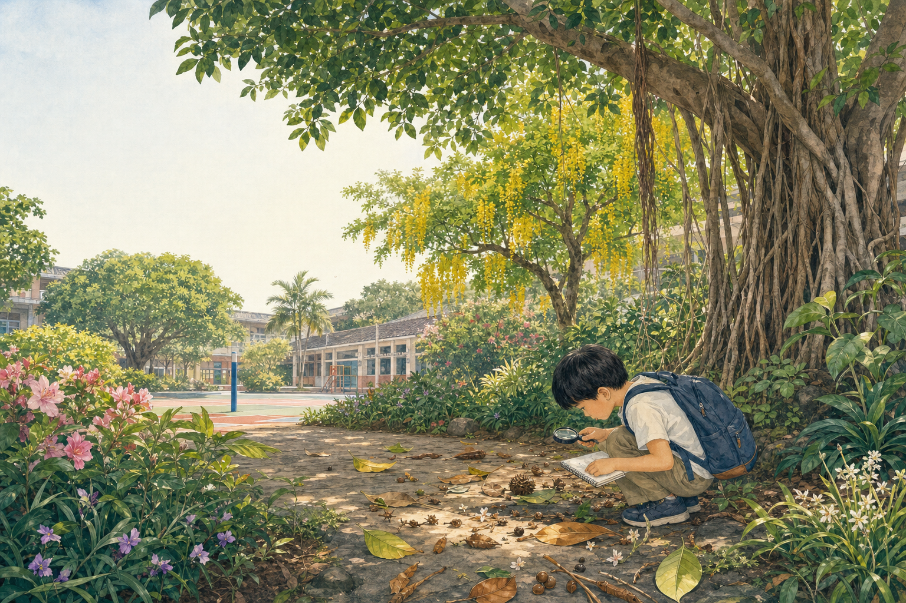

Campus field guide · Taiwan
植物偵探
先看整株，再看葉、花、果；用證據說出「我為什麼這樣判斷」。
YOUR FIELD ROUTE
七條觀察路線
植物不是只靠一張葉片就能認出。沿著不同頁籤蒐集「整株、莖、葉、花、果實與種子」證據，再回到實物比對。
01 / 61 SPECIES
台灣校園常見植物
13 張 IMAGE 2.0 圖版、61 種植物、每種都有辨識線索與安全提醒。
02 / FRUIT & SEEDS果實與種子
用 6 張 IMAGE 2.0 圖比較形成來源、肉質果、乾果、種子構造與散播。
03 / LEAVES葉子的形態
比較葉形、葉緣、葉脈、葉序，以及單葉和複葉。
04 / 32 SCENT PLANTS會香的植物
以 27 種木本或木質化植物為主，加上 5 種常見香草，辨認花香、葉香與安全聞香方法。
05 / GAMES 01–08校園花草五感體驗
賓果、聞香、觸覺、聲音、色彩、安全味覺、落葉創作與五感記憶；8 套 30 分鐘完整分齡教案。
06 / LEARN MORE植物自主學習站
從臺灣圖鑑到全球植物資料庫，練習查學名、比對特徵與記錄可靠來源。
OBSERVE BEFORE NAME
偵探的四步法
「看起來像」只是起點。可靠的植物觀察需要位置、時間、大小與多個構造一起支持。
- 先看環境
記錄日期、校園位置、日照與植株是喬木、灌木、草本或藤本。 - 看整株
注意樹冠、分枝、莖的木質或草質；不要只拍一片葉。 - 找三種線索
葉序＋葉形／葉緣＋花果，至少三項相符再暫定名稱。 - 留下可重查紀錄
畫圖、量大小、寫顏色與觸感；不確定就標「待查」。
安全底線：先取得教師或校方同意；只撿地面自然掉落且確認可接觸的少量材料。不摘、不折、不拔、不挖、不攀爬，不用嘴巴辨認任何植物。